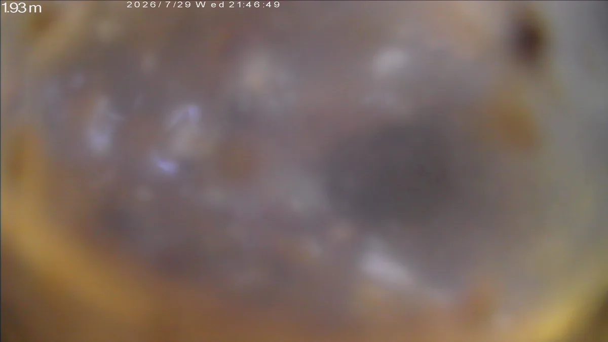
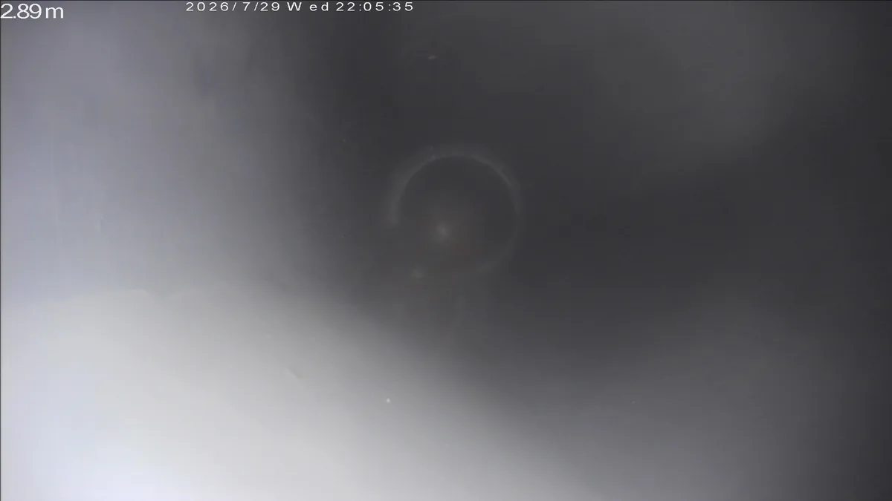
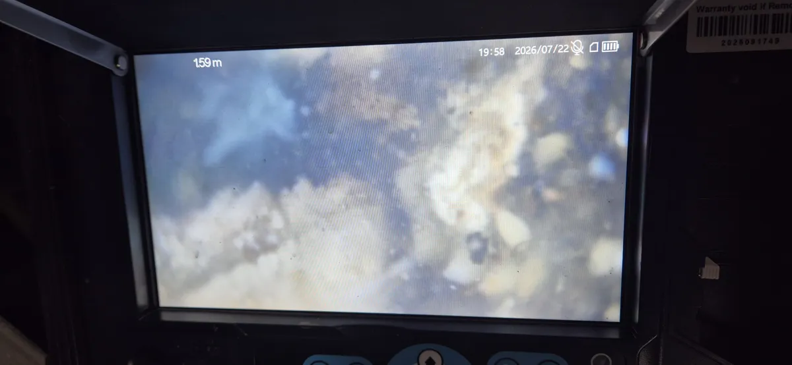
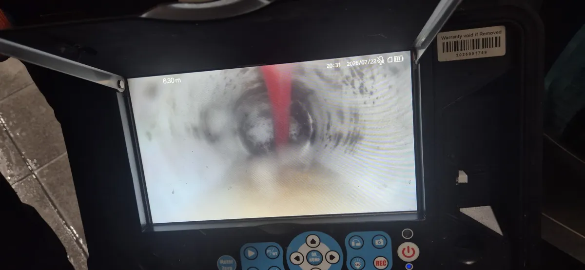

2026년 7월 29일 · 남구 봉선동 아파트
수십 년 쌓인 기름때로 역류한 싱크대
싱크대 물이 역류한다는 연락이었습니다. 집은 리모델링을 했지만 배관은 바꾸지 않아, 오래된 배관 벽에 기름때와 음식물 찌꺼기, 세제 찌꺼기가 쌓여 있었습니다. 샤프트로 여러 번 반복해서 긁어낸 뒤, 싱크대에 물을 받아 내려 보내며 배수를 확인했습니다.
- 쓴 장비
- 내시경카메라 · 플렉스샤프트


배관 스케일링은 배관 안쪽 벽에 붙은 기름때와 찌꺼기를 긁어내는 청소입니다.
내시경으로 작업 전과 후를 함께 확인합니다.
2026년 7월 29일 · 남구 봉선동 아파트
싱크대 물이 역류한다는 연락이었습니다. 집은 리모델링을 했지만 배관은 바꾸지 않아, 오래된 배관 벽에 기름때와 음식물 찌꺼기, 세제 찌꺼기가 쌓여 있었습니다. 샤프트로 여러 번 반복해서 긁어낸 뒤, 싱크대에 물을 받아 내려 보내며 배수를 확인했습니다.


광주 상무지구 · 상가건물 · 식당
기름을 많이 쓰는 식당이라 주방 바닥 배수로와 하수배관이 기름때로 막혀 있었습니다. 내시경으로 배관 안을 확인하고 플렉스 샤프트로 긁어냈습니다.


2026년 7월 20일 · 광산구 선운지구 아파트
싱크대 아래에 S트랩이 있는데도 악취가 심했습니다. 내시경으로 보니 배관 안에 기름때와 음식물 찌꺼기가 쌓여 있었습니다. 샤프트로 배관 벽을 긁어낸 뒤 악취가 사라진 것을 확인했습니다.
2026년 5월 18일 · 동구 학동 PC방
식기세척기 물이 한꺼번에 내려갈 때마다 싱크대 아래에서 역류했습니다. 1년 전쯤 석션기로 뚫었지만 배관 벽의 기름때는 그대로 남아 물길이 거의 없는 상태였습니다. 스케일링을 한 뒤 식기세척기를 돌려 배수를 확인하고, 내시경으로 깨끗해진 배관 안을 함께 확인했습니다.
※ 표기된 가격은 참고용이며, 작업 범위와 현장 여건에 따라 비용 조정이 가능합니다. 불필요한 비용은 줄이고 필요한 작업만 합리적인 금액으로 진행합니다.